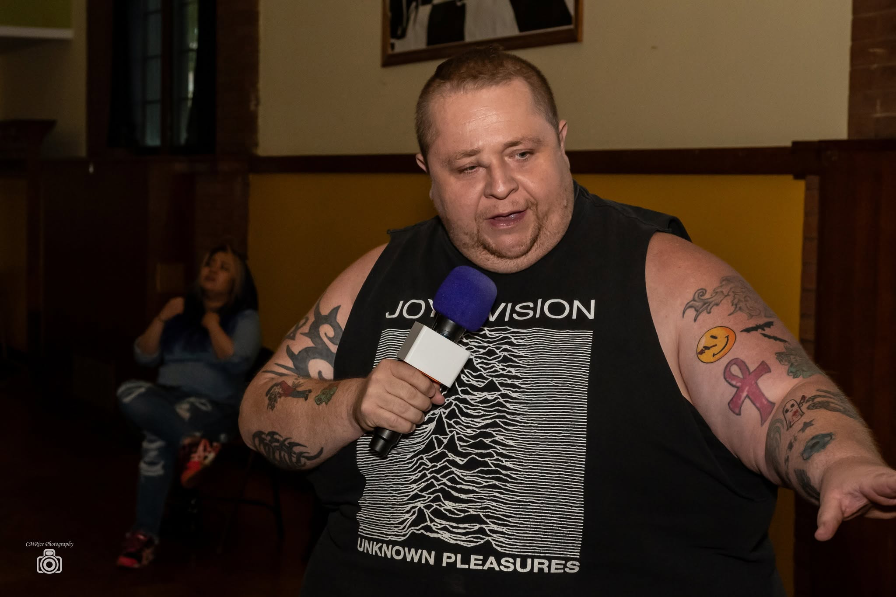
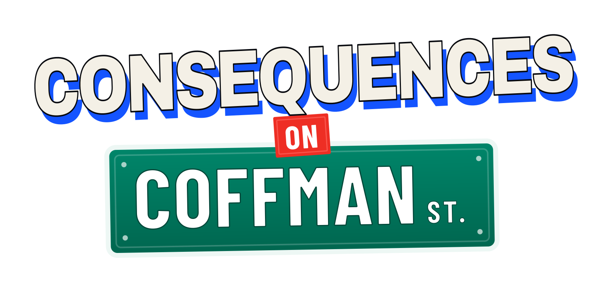
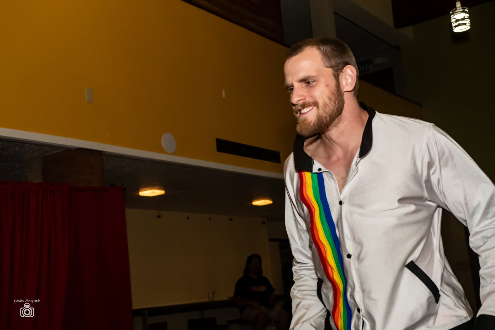
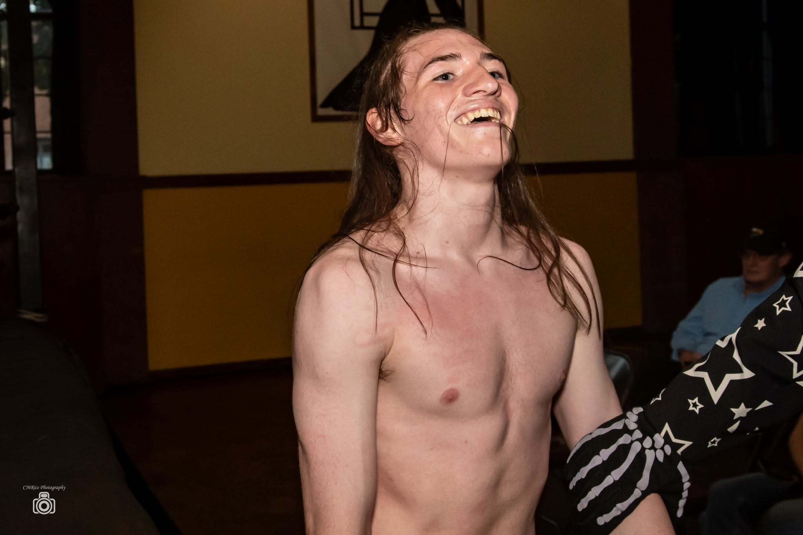
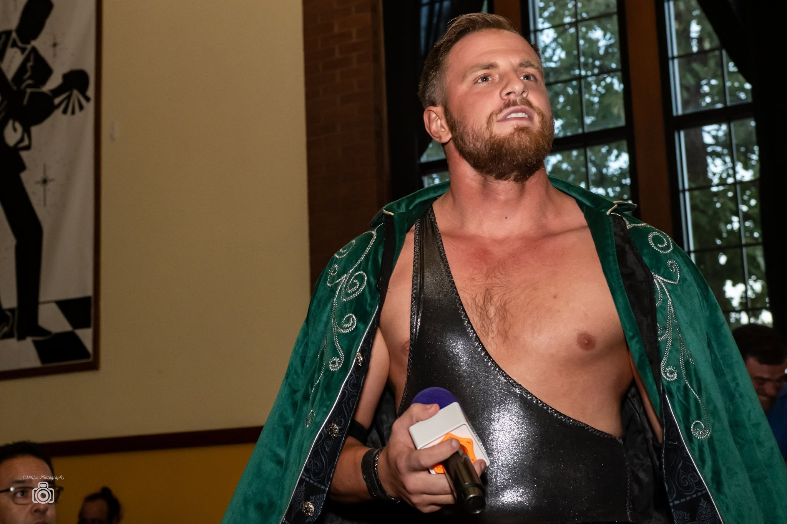
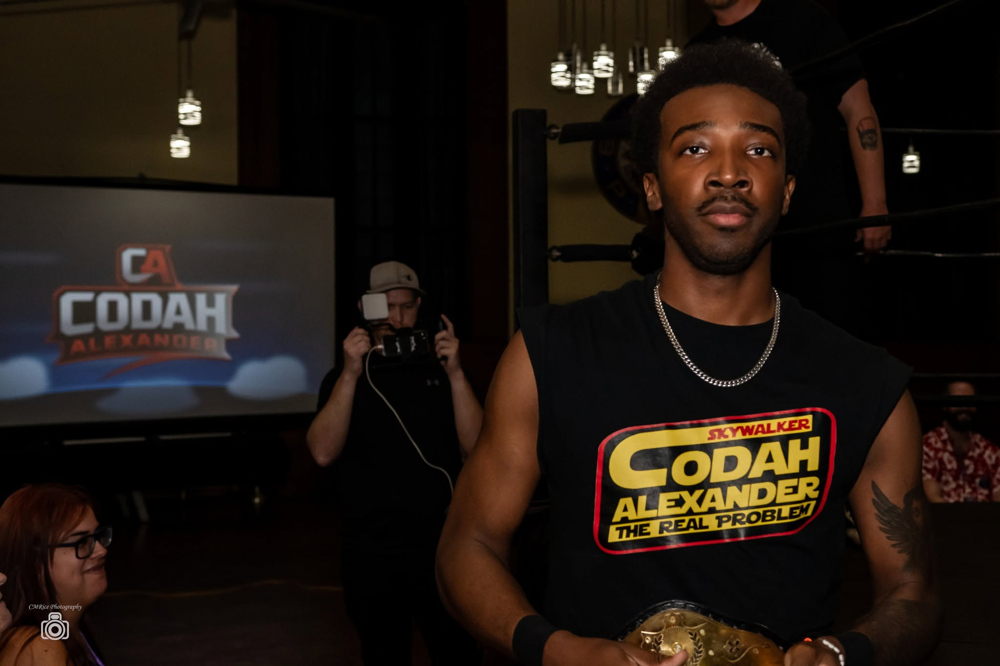
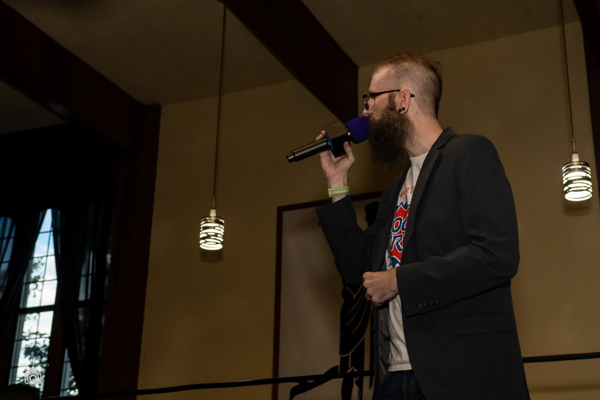

{kind=link}
{kind=link}
{kind=link}

Johnny Crash
Longmont's hometown wrestler and a punk-rock brawler. Reached the final two of the City of Lights Elimination Gauntlet at Vendetta. Appeared at Last Stand but was not medically cleared to compete that night.
Press Kit
Family friendly, story-driven professional wrestling in Longmont, Colorado. Next: Consequences on Coffman Street, Sunday, January 24, 2027, at the Historic Elks Lodge Ballroom.
Updated September 24, 2026. Editorial resources, official photos, and press contacts. Photo credit is required.
LoCo Pro Wrestling started in 2017 as a single show built specifically for Longmont. Thom Ingram, a Longmont high school teacher, and Aaron Macomber trained together at Primos Premier Pro Wrestling's Butcher Shop in Denver. Ingram booked the Dickens Opera House and brought in students as the crew, building a show around the city and its history.
Battle for Main Street was meant to be the only one. The promotion went dormant, Ingram moved away, and Macomber took it over and brought it back to the Dickens Opera House in November 2025, eight years after the first bell. The factions and the Longmont mythology carried over. Last Stand at the Lodge brought LoCo to the Elks Lodge Ballroom on August 30, 2026. The promotion returns there for Consequences on Coffman Street on January 24, 2027, with matches and story episodes available free on YouTube between shows.
Use this paragraph as the boilerplate. Copy it as is.

Approved event logo, transparent PNGAugust 30, 2026. Longmont Elks Lodge #1055. Nine years to the day after Battle for Main Street.
Zeak Gallent defeated Dean Mercer and Codah Alexander in a contender triple threat, then beat JT Staten one-on-one to win the City of Lights Championship.
After the main event, Adam Starling confessed to manipulating the year's events. Carter Cash superkicked him. Nicky Hyde attacked Gallent and held the championship over the fallen champion.
Full official results · Official photo gallery
The current arc follows two factions and, since August 2026, a third voice. The Rising won the 2025 City of Lights Tournament. At Vendetta, J.T. Staten won the City of Lights Championship and dissolved his own faction to form The Foundation, taking control of the venue and locking the rest of the roster out. At The Last Stand at the Lodge on August 30, 2026, Zeak Gallent beat Staten one-on-one for the championship, Commissioner Adam Starling admitted the year had been his design, Carter Cash superkicked the Commissioner, and Nicky Hyde ended the night holding the new champion's belt over him.
Selected wrestlers and personalities from LoCo's recent history, updated after Last Stand. These profiles are not a Consequences match card or appearance announcement. Linked portraits open at print resolution.

Longmont's hometown wrestler and a punk-rock brawler. Reached the final two of the City of Lights Elimination Gauntlet at Vendetta. Appeared at Last Stand but was not medically cleared to compete that night.

Former City of Lights Champion and the promotion's lead antagonist. Leader of The Foundation. Lost the title to Zeak Gallent at The Last Stand at the Lodge when nobody from his faction came out to help him.
"The Picture of Talent." Current City of Lights Champion, having beaten JT Staten one-on-one at Last Stand on August 30, 2026. Won the contender triple threat earlier that night and the City of Lights Tournament in 2025.

After facing Rubi Devlin and Morgan Mandella at Last Stand, she embraced Anuka Gutierrez and left LoCo with him. Their next chapter remains open.

"The Future." Turned on his own side in the closing moments of Vendetta, in complete silence, and has not explained why. At The Last Stand at the Lodge he superkicked Commissioner Adam Starling and squared off with Nicky Hyde over the new champion.

"The Stupendous One." Enforcer, and one half of a long-running feud with Carter Cash. Ended The Last Stand at the Lodge standing over the new champion with the City of Lights Championship held above his head.

"The Skywalker." Brought his high-flying style to Last Stand's contender triple threat against Zeak Gallent and Dean Mercer. Gallent won the match.

The promotion's patriotic character, and one of its most reliable crowd favorites. Lost to Morgana Lavey by pinfall at The Last Stand at the Lodge and left carrying her out on his shoulder, apparently under her control.

Commissioner of LoCo Pro Wrestling. At Last Stand he admitted that the year's events had been his design and told Zeak Gallent he had lied to him. Carter Cash answered with a superkick.

"The Gift of Greatness." His Vendetta win forced J.T. Staten into the Gauntlet personally instead of sending a proxy. Won at The Last Stand at the Lodge with Franky Gonzales as Pretty Great.

Debuted at Vendetta by running in to break up a two-on-one attack, and stayed.

"All Business." Faced Zeak Gallent and Codah Alexander in Last Stand's contender triple threat. Previously defeated Johnny Crash in a Falls Count Anywhere match at Vendetta.

"The Pretty Boy." Thrown out of the Gauntlet by his own faction after a loss. At The Last Stand at the Lodge he came back to Michael Avalon's side, won as Pretty Great, and took the handshake he had refused before.

"Cloud King." The original faction leader, who fights with contracts and loopholes more than holds.

Won his contractual freedom at Vendetta. At Last Stand he teamed with Erza Menagerie Tinker against Rubi Devlin and Morgan Mandella. After the loss, he and Erza embraced and left together.

An enforcer, and the opponent standing between Anuka Gutierrez and that freedom.

Escaped from the Netherrealm to compete at Vendetta. At The Last Stand at the Lodge, Major Glory carried her out of the building; whatever hold she has on him is unexplained.

A masked figure from the promotion's 2017 season whose influence is still felt today. His stated goal was to bring down The Pillars. At The Last Stand at the Lodge he appeared during the main event and called out J.T. Staten.
"Box State Brawler." Arrived with XJ Khaos, Rubi Devlin, and Morgan Mandella to give Longmont's rebellion a voice. Teamed with XJ against Pretty Great.
Debuted alongside Murdoc Graves, Rubi Devlin, and Morgan Mandella. Joined Murdoc against the reunited Michael Avalon and Franky Gonzales.
Debuted at Last Stand with a win alongside Morgan Mandella against Erza Menagerie Tinker and Anuka Gutierrez.
Arrived with the rebellion and teamed with Rubi Devlin for an opening-match victory over Erza Menagerie Tinker and Anuka Gutierrez.
Former referee who stepped into competition at Last Stand, facing Nicky Hyde and Carter Cash in the grudge tag match.
All roster photography by CMRice Photography. Credit required.
Full earlier shows, Last Stand highlights, and individual matches. Free, no login required.
A first selection from CMRice Photography's first-half coverage, August 30, 2026.
Cleared for editorial use. Credit is required on any use: Photo by CMRice Photography. Click any image for the print-resolution file.


{kind=link}
{kind=link}
{kind=link}
{kind=link}
{kind=link}